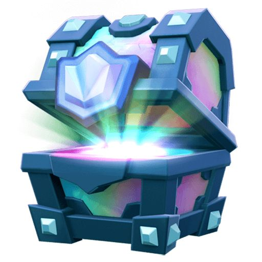

TE AMO MI CHIQUILLO LINDO
PARA EL MAS PRO DE CLASH:

mediante esta mini carta quiero expresarte el cuan importante eres para
no sabes lo mucho que te amo, se que hemos tenido una que otra emocio´n
negativa sin embargo, ambos podemos expresarnos en confianza para asi
hacerle saber al otro el como se siente y hoy fue un di´a de ejemplo de ello
agradezco tanto el que me hayas hecho saber como te sentís y de nuevo, disculpame por haberte hecho sentir asi.
Te amo demasiado corazón mío, eres un chico increíble y alguien esencial en
mi vida, no quiero perderte no otra vez, la vez que lo hice lloré como no tienes una idea
eres el amor que siempre anhele y te agradezco tanto el hecho de que me ames como siempre quise
gracias por tanto amor mi nin˜o, espero regresartelo de mil y un maneras, te amo infinitamente y con toda mi alma chiquillo de ojos preciosos.